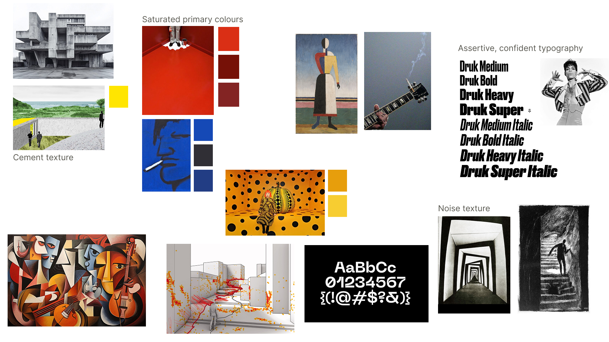
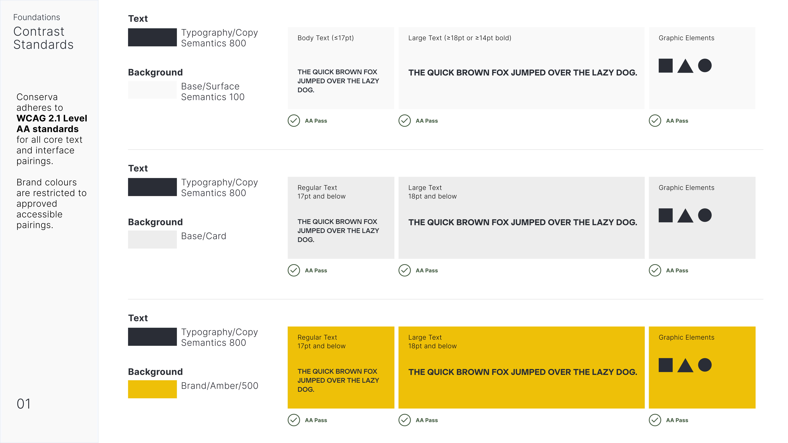
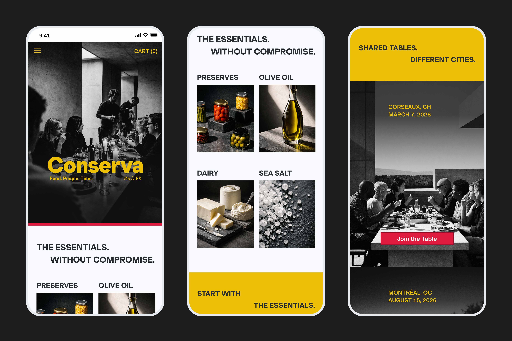
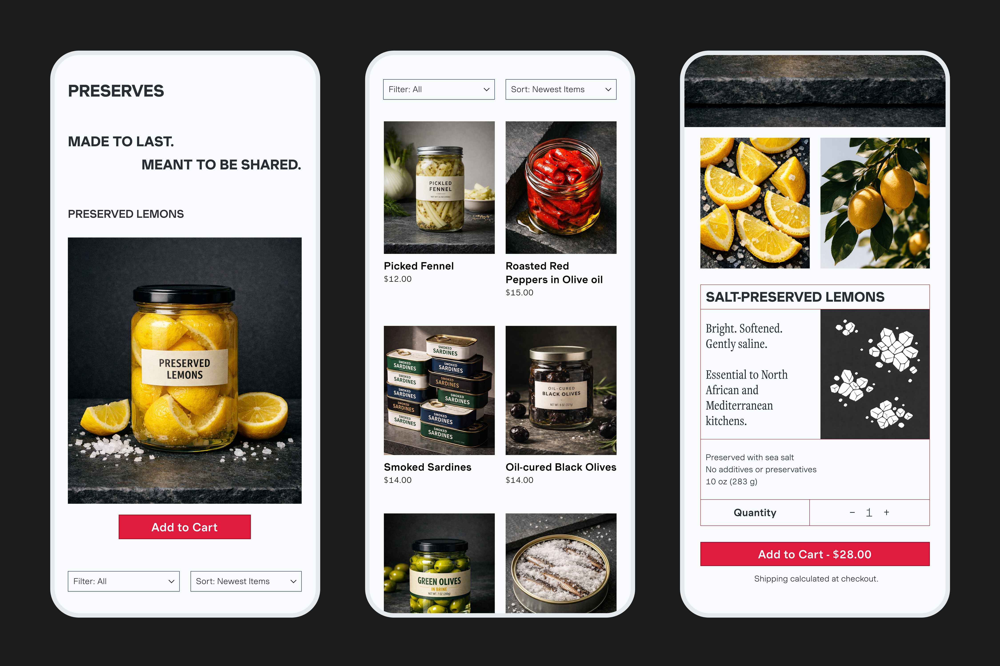
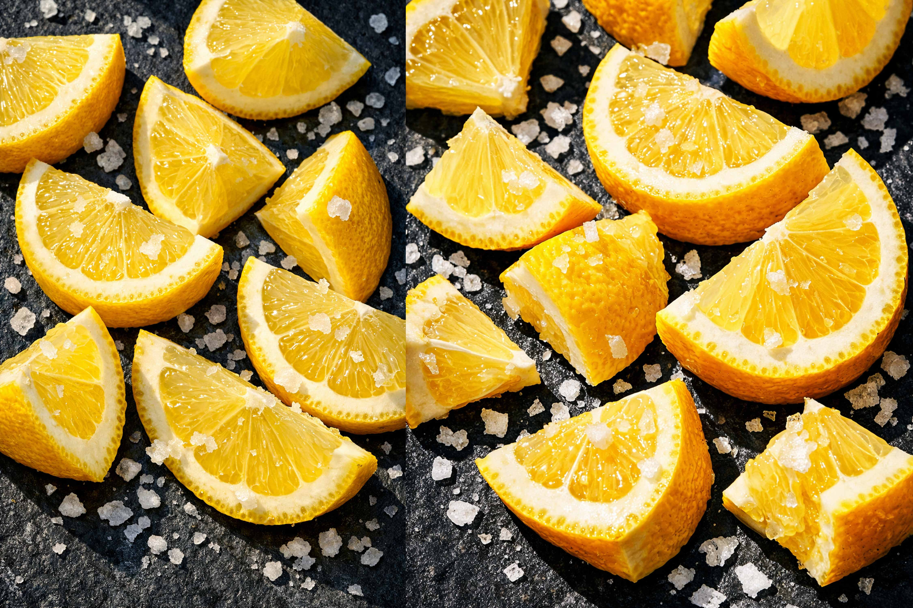

UI Design · Brand System · 2026
Conserva
A premium food discovery platform built on a strong editorial point of view and a design system engineered to scale without losing its character.
Explore interactive prototype
A premium food discovery platform built on a strong editorial point of view and a design system engineered to scale without losing its character.
Explore interactive prototype
Food platforms tend to fall into two patterns. Some are purely functional: structured, efficient, and difficult to browse with any sense of pleasure. Others lean heavily into visual richness, but lose clarity under the weight of it.
Neither serves the discerning home cook, someone who wants to discover something new and trusts the curation behind it.
Design challenge: How do you build a product that feels expressive and opinionated at every touchpoint, without that expression collapsing into inconsistency as it grows?
Early exploration made one thing clear: a distinct visual voice only stays distinct if it's anchored by rules: colour, typography, composition, and how those elements relate to each other across screens. Without that, the system fragments as content is added.
The instinct
Build the brand first, then figure out the system later.
The reframe
The system is the brand. Build both together.

The system was built using Atomic Design methodology: colour tokens and type scales defined first, spacing rules locked next, then components assembled from those foundations. Nothing was designed in isolation. Every component inherits from the system rather than overriding it.
This allows the product to scale across iOS, Android, and web while maintaining a consistent point of view.
Explore the Conserva Design System
Full-bleed imagery anchors categories and product views. Rather than competing with type or icons, photography does the cognitive work, reducing the need for labels and making visual richness the navigation mechanism, not decoration.
Colour appears sparingly and with purpose—calls to action, category anchors, key modules. It is never ambient.
Product descriptions open with sensory cues, Bright. Softened. Gently saline, before any technical detail. This sequence reflects how people actually decide whether they want something: feeling first, then fact.


A high-fidelity product where the point of view and the system that sustains it were designed as one thing, not two.
The prototype covers the full purchase flow—discovery, browsing, product detail, and cart—across platforms. The system defines tokens, components, and patterns in a way that can be carried into development without dilution.
The AI image generation workflow, with a structured prompting framework built around lighting, texture, composition, and colour relationships, produced a library of photography that stays visually coherent across every product category.

The most useful thing Conserva taught me was the discipline of building in the right order. Defining colour, type, and spacing tokens before touching a single component meant that every design decision downstream was faster, more consistent, and easier to justify, each decision inherited from the foundation rather than negotiated from nothing.
It also changed how I think about AI as a creative tool. Image generation only stays coherent if the person using it thinks like a designer, specifying constraints, not just describing outcomes. The prompt system developed for Conserva was design thinking applied to a new medium.
If the project continued, the next layer of work would include:
TThe system isn't separate from the brand. It's what allows the brand to repeat without losing its edge.